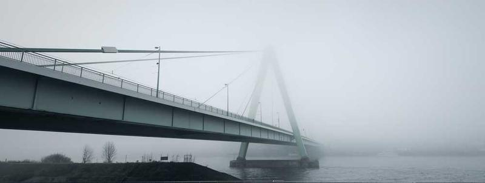

Bridge
Image Description:
The image contains a big, sleek bridge stretching across a river, but it's all wrapped up in a thick, mysterious fog. The bridge has a modern vibe with its clean lines and a cool triangular support structure on one side, which kinda gives it a futuristic feel. The whole thing is painted in this greenish-gray color that blends into the misty background. You can see the bridge's cables and lights faintly through the fog, adding a bit of a spooky, ethereal touch. Down below, there's the calm river flowing under it, with some shadowy land and bare trees peeking out near the banks. The fog makes it hard to see too far, so it feels like the bridge just disappears into the haze, which is kinda intriguing. Overall, it's got this moody, almost cinematic atmosphere going on!